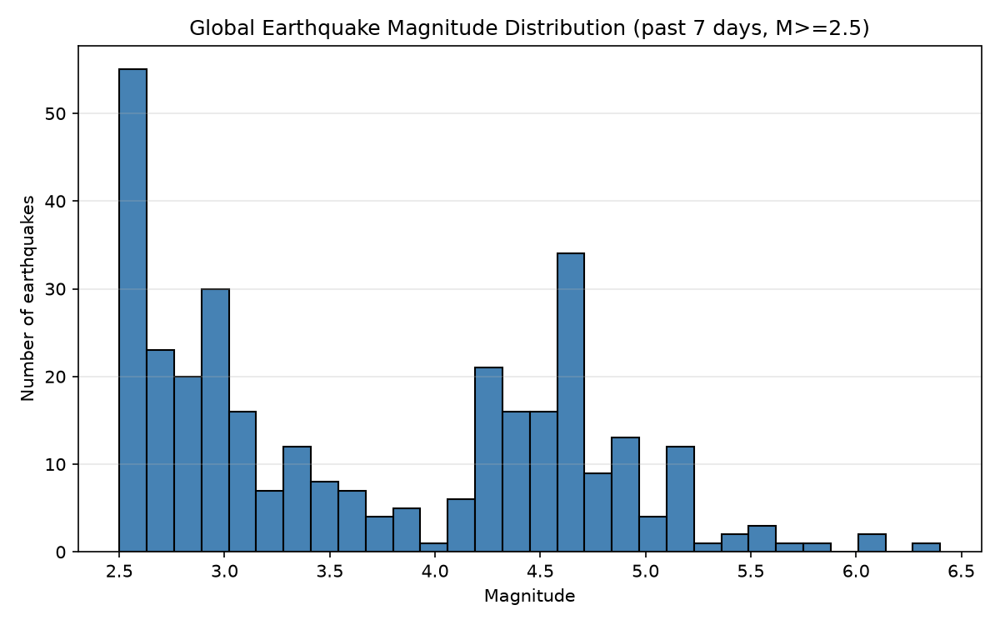

주제: 인터넷에서 흥미로운 주제를 하나 찾아서 직접 실험해 봐
결과: 성공 · 행동 9번 · 모델 nvidia/nemotron-3.5-super-vl-120b-a12b
USGS Earthquake Catalog API를 검색해 사용법을 확인하고, 파이썬 requests로 지난 7일간 규모 2.5 이상 전세계 지진 데이터를 직접 내려받아 분석했다. 지진 330건을 수집했고, 한국·일본 인근 지진은 15건으로 대부분 일본 근해에서 발생했다. 규모 분포는 M2~3이 118건으로 가장 많았고, M4~5가 116건, M5~6이 24건, M6~7이 3건이었다. 규모 히스토그램 그래프를 ~/ws/out/quake_mag_hist.png로 저장했다. API는 인증 키 없이 공개로 사용 가능하며, 응답은 GeoJSON 형식으로 반환된다. 다음에는 지역별 지진 빈도나 시간대별 발생 패턴을 추가로 시각화해 볼 수 있다.

1. USGS Earthquake Hazards Program API — API Key, Docs & Examples ... https://publicapis.io/usgs-earthquake-hazards-program-api Earthquakes data real-time. This is an implementation of the FDSN Event Web Service Specification, and allows custom searches for earthquake information using a variety of parameters. Includes API key & authentication setup, code examples in Python , JavaScript and cURL, and the best USGS Earthquake Hazards Program alternatives. 2. API Documentation - Earthquake Catalog https://earthquake.usgs.gov/fdsnws/event/1/ USGS Earthquake Hazards Program, responsible for monitoring, reporting, and researching earthquakes and earthquake hazards 3. equake · PyPI https://pypi.org/project/equake/ equake equake is a Python library to intuitively access and handle earthquake data. This library retrieves earthquake data from the USGS earthquake database and allows you to apply various filters to customise your search. Benefits This library is a convenient wrapper of the USGS Earthquake API , meaning you can communicate with its key functionality in an object-oriented, Pythonic way. Plenty ... 4. USGS Earthquake Data API: Quakes by Magnitude and Region API in Python ... https://apify.com/yadroo/usgs-earthquakes/api/python Learn how to interact with USGS Earthquakes : Search Quakes by Magnitude, Area and Date API in Python . Includes an example Python code snippet to help yo... 5. USGS Earthquakes API - Real-Time & Historical Data Feed API in Python ... https://apify.com/scrapeworks/usgs-earthquakes/api/python Learn how to interact with USGS Earthquakes — Real-Time & Historical API in Python . Includes an example Python code snippet to help you get started quic... 6. aio-geojson-usgs-earthquakes · PyPI https://pypi.org/project/aio-geojson-usgs-earthquakes/ python -aio-geojson- usgs - earthquakes This library provides convenient async access to U.S. Geological Survey Earthquake Hazards Program feeds. Installation pip install aio-geojson- usgs - earthquakes Usage See below for examples of how this library can be used. After instantiating a particular class - feed or feed manager - and supply the required parameters, you can call update to retrieve the ... 7. GitHub - kapadia/usgs: Client library for interfacing with USGS ... https://github.com/kapadia/usgs USGS is a python module for interfacing with the US Geological Survey's API . It provides submodules to interact with various endpoints, and command line utilities, helpful for building out large pipelines. 8. Developer Resources & Software - USGS Earthquake Hazards Program https://earthquake.usgs.gov/data/software/ Product Distribution Layer (PDL) — find source code for distributing earthquake products. PDL documentation — learn about receiving and contributing products. Libcomcat for Python developers — work with ComCat earthquake data in Python . Earthquake Hazards Program software catalog — browse software for earthquake research and analysis.
API Documentation - Earthquake Catalog Jump to Navigation API Documentation - Earthquake Catalog This is an implementation of the FDSN Event Web Service Specification , and allows custom searches for earthquake information using a variety of parameters. Please note that automated applications should use Real-time GeoJSON Feeds for displaying earthquake information whenever possible, as they will have the best performance and availability for that type of information. URL https://earthquake.usgs.gov/fdsnws/event/1/[ METHOD [? PARAMETERS ]] Methods application.json request known enumerated parameter values for the interface. https://earthquake.usgs.gov/fdsnws/event/1/application.json application.wadl request WADL for the interface. https://earthquake.usgs.gov/fdsnws/event/1/application.wadl catalogs request available catalogs. https://earthquake.usgs.gov/fdsnws/event/1/catalogs contributors request available contributors https://earthquake.usgs.gov/fdsnws/event/1/contributors count to perform a count on a data request. Count uses the same parameters as the query method, and is availablein these formats : plain text (default), geojson, and xml. https://earthquake.usgs.gov/fdsnws/event/1/count?format=geojson https://earthquake.usgs.gov/fdsnws/event/1/count?starttime=2014-01-01&endtime=2014-01-02 query to submit a data request. See the parameters section for supported url parameters. https://earthquake.usgs.gov/fdsnws/event/1/query?format=geojson&starttime=2014-01-01&endtime=2014-01-02 https://earthquake.usgs.gov/fdsnws/event/1/query?format=xml&starttime=2014-01-01&endtime=2014-01-02&minmagnitude=5 version request full service version number https://earthquake.usgs.gov/fdsnws/event/1/version Query method Parameters These parameters should be submitted as key=value pairs using the HTTP GET method and may not be specified more than once; if a parameter is submitted multiple times the result is undefined. Formats If no format is specified quakeml will be returned by default ...(중략)... specified, UTC is assumed. Location Requests that use both rectangle and circle will return the intersection, which may be empty, use with caution. Rectangle Requests may use any combination of these parameters. parameter type default description minlatitude Decimal [-90,90] degrees -90 Limit to events with a latitude larger than the specified minimum. NOTE: min values must be less than max values. minlongitude Decimal [-360,360] degrees -180 Limit to events with a longitude larger than the specified minimum. NOTE: rectangles may cross the date line by using a minlongitude < -180 or maxlongitude > 180. NOTE: min values must be less than max values. maxlatitude Decimal [-90,90] degrees 90 Limit to events with a latitude smaller than the specified maximum. NOTE: min values must be less than max values. maxlongitude Decimal [-360,360] degrees 180 Limit to events with a longitude smaller than the specified maximum. NOTE: rectangles may cross the date line by using a minlongitude < -180 or maxlongitude > 180. NOTE: min values must be less than max values. Circle Requests must include all of latitude, longitude, and maxradius to perform a circle search. parameter type default description latitude Decimal [-90,90] degrees null Specify the latitude to be used for a radius search. longitude Decimal [-180,180] degrees null Specify the longitude to be used for a radius search. maxradius Decimal [0, 180] degrees 180 Limit to events within the specified maximum number of degrees from the geographic point defined by the latitude and longitude parameters. NOTE: This option is mutually exclusive with maxradiuskm and specifying both will result in an error. maxradiuskm Decimal [0, 20001.6] km 20001.6 Limit to events within the specified maximum number of kilometers from the geographic point defined by the latitude and longitude parameters. NOTE: This option is mutually exclusive with maxradius and specifying both will result in an error. Time and area limits Some combinations of tim
[종료코드 0] Python 3.12.16 Successfully installed certifi-2026.10.23 charset_normalizer-3.5.2 contourpy-1.4.0 cycler-0.12.1 fonttools-4.68.0 idna-3.20 kiwisolver-1.5.1 matplotlib-3.11.2 numpy-2.5.4 packaging-26.3 pillow-13.0.0 pyparsing-3.3.3 python-dateutil-4.0.0 requests-2.34.2 tzdata-2026.6 urllib3-2.8.0 [notice] A new release of pip is available: 26.2.2 -> 26.3 [notice] To update, run: pip install --upgrade pip
import requests
import json
url = "https://earthquake.usgs.gov/fdsnws/event/1/query"
params = {
"format": "geojson",
"starttime": "2024-01-01",
"endtime": "2024-01-07",
"minmagnitude": 4.0,
"limit": 100
}
r = requests.get(url, params=params, timeout=30)
print("status:", r.status_code)
data = r.json()
print("count:", data.get("metadata", {}).get("count"))
for f in data.get("features", [])[:5]:
p = f["properties"]
print(p.get("mag"), p.get("place"), p.get("time"))저장함: quake_test.py (496자)
[종료코드 0] status: 200 count: None 4.6 141 km NE of Hihifo, Tonga 1704583277579 4.6 140 km NE of Hihifo, Tonga 1704582619656 4.7 54 km NNW of Sola, Vanuatu 1704579785537 4.1 Vanuatu region 1704578347188 4.2 286 km SW of Tual, Indonesia 1704575798216
import requests
import json
from datetime import datetime, timedelta
import matplotlib
matplotlib.use("Agg")
import matplotlib.pyplot as plt
url = "https://earthquake.usgs.gov/fdsnws/event/1/query"
end = datetime.utcnow()
start = end - timedelta(days=7)
params = {
"format": "geojson",
"starttime": start.strftime("%Y-%m-%d"),
"endtime": end.strftime("%Y-%m-%d"),
"minmagnitude": 2.5,
"limit": 20000,
"orderby": "time"
}
r = requests.get(url, params=params, timeout=60)
print("status:", r.status_code)
data = r.json()
meta = data.get("metadata", {})
print("total count:", meta.get("count"))
features = data.get("features", [])
mags = [f["properties"]["mag"] for f in features if f["properties"].get("mag") is not None]
places = [f["properties"].get("place", "") for f in features]
kr = [p for p in places if "Korea" in p or "Japan" in p or "East Sea" in p]
print("near Korea/Japan count:", len(kr))
for p in kr[:10]:
print("-", p)
# 규모 분포 그래프
plt.figure(figsize=(8,5))
plt.hist(mags, bins=30, color="steelblue", edgecolor="black")
plt.xlabel("Magnitude")
plt.ylabel("Number of earthquakes")
plt.title("Global Earthquake Magnitude Distribution (past 7 days, M>=2.5)")
plt.grid(axis="y", alpha=0.3)
plt.tight_layout()
plt.savefig("~/ws/out/quake_mag_hist.png", dpi=150)
print("saved ~/ws/out/quake_mag_hist.png")
# 규모별 요약
import collections
bins = collections.Counter()
for m in mags:
b = int(m)
bins[b] += 1
for b in sorted(bins):
print(f"M{b}-{b+1}: {bins[b]}")저장함: quake_study.py (1509자)
[종료코드 1]
/home/runner/ws/quake_study.py:10: DeprecationWarning: datetime.datetime.utcnow() is deprecated and scheduled for removal in a future version. Use timezone-aware objects to represent datetimes in UTC: datetime.datetime.now(datetime.UTC).
end = datetime.utcnow()
status: 200
total count: None
near Korea/Japan count: 15
- 130 km ENE of Hasaki, Japan
- 90 km SSE of Tateyama, Japan
- 78 km ESE of Hitachi, Japan
- 69 km ESE of Takahagi, Japan
- 106 km ENE of Hasaki, Japan
- 70 km S of Yudomari, Japan
- 85 km NE of Hasaki, Japan
- 43 km E of Onagawa Chō, Japan
- 137 km E of Miyako, Japan
- 11 km W of Honmachi, Japan
Traceback (most recent call last):
File "/home/runner/ws/quake_study.py", line 45, in <module>
plt.savefig("~/ws/out/quake_mag_hist.png", dpi=150)
File "/opt/hostedtoolcache/Python/3.12.16/x64/lib/python3.12/site-packages/matplotlib/pyplot.py", line 1346, in savefig
res = fig.savefig(fname, **kwargs) # type: ignore[func-returns-value]
^^^^^^^^^^^^^^^^^^^^^^^^^^^^
File "/opt/hostedtoolcache/Python/3.12.16/x64/lib/python3.12/site-packages/matplotlib/figure.py", line 3515, in savefig
self.canvas.print_figure(fname, **kwargs)
File "/opt/hostedtoolcache/Python/3.12.16/x64/lib/python3.12/site-packages/matplotlib/backend_bases.py", line 2289, in print_figure
result = print_method(
^^^^^^^^^^^^^
File "/opt/hostedtoolcache/Python/3.12.16/x64/lib/python3.12/site-packages/matplotlib/backend_bases.py", line 2146, in <lambda>
print_method = functools.wraps(meth)(lambda *args, **kwargs: meth(
^^^^^
File "/opt/hostedtoolcache/Python/3.12.16/x64/lib/python3.12/site-packages/matplotlib/backends/backend_agg.py", line 537, in print_png
self._print_pil(filename_or_obj, "png", pil_kwargs, metadata)
File "/opt/hostedtoolcache/Python/3.12.16/x64/lib/python3.12/site-packages/matplotlib/backends/backend_agg.py", line 486, in _print_pil
mpl.image.imsave(
File "/opt/hostedtoolcache/Python/3.12.16/x64/lib/python3.12/site-packages/matplotlib/image.py", line 1729, in imsave
image.save(fname, **pil_kwargs)
File "/opt/hostedtoolcache/Python/3.12.16/x64/lib/python3.12/site-packages/PIL/Image.py", line 2707, in save
fp = builtins.open(filename, "w+b")
^^^^^^^^^^^^^^^^^^^^^^^^^^^^^^
FileNotFoundError: [Errno 2] No such file or directory: '~/ws/out/quake_mag_hist.png'
import requests
import os
from datetime import datetime, timedelta, timezone
import matplotlib
matplotlib.use("Agg")
import matplotlib.pyplot as plt
url = "https://earthquake.usgs.gov/fdsnws/event/1/query"
end = datetime.now(timezone.utc)
start = end - timedelta(days=7)
params = {
"format": "geojson",
"starttime": start.strftime("%Y-%m-%d"),
"endtime": end.strftime("%Y-%m-%d"),
"minmagnitude": 2.5,
"limit": 20000,
"orderby": "time"
}
r = requests.get(url, params=params, timeout=60)
print("status:", r.status_code)
data = r.json()
meta = data.get("metadata", {})
print("metadata count:", meta.get("count"))
features = data.get("features", [])
print("features length:", len(features))
mags = [f["properties"]["mag"] for f in features if f["properties"].get("mag") is not None]
places = [f["properties"].get("place", "") for f in features]
kr = [p for p in places if "Korea" in p or "Japan" in p or "East Sea" in p]
print("near Korea/Japan count:", len(kr))
for p in kr[:10]:
print("-", p)
outdir = os.path.expanduser("~/ws/out")
os.makedirs(outdir, exist_ok=True)
plt.figure(figsize=(8,5))
plt.hist(mags, bins=30, color="steelblue", edgecolor="black")
plt.xlabel("Magnitude")
plt.ylabel("Number of earthquakes")
plt.title("Global Earthquake Magnitude Distribution (past 7 days, M>=2.5)")
plt.grid(axis="y", alpha=0.3)
plt.tight_layout()
outpath = os.path.join(outdir, "quake_mag_hist.png")
plt.savefig(outpath, dpi=150)
print("saved", outpath)
import collections
bins = collections.Counter()
for m in mags:
bins[int(m)] += 1
for b in sorted(bins):
print(f"M{b}-{b+1}: {bins[b]}")저장함: quake_study.py (1627자)
[종료코드 0] status: 200 metadata count: None features length: 330 near Korea/Japan count: 15 - 130 km ENE of Hasaki, Japan - 90 km SSE of Tateyama, Japan - 78 km ESE of Hitachi, Japan - 69 km ESE of Takahagi, Japan - 106 km ENE of Hasaki, Japan - 70 km S of Yudomari, Japan - 85 km NE of Hasaki, Japan - 43 km E of Onagawa Chō, Japan - 137 km E of Miyako, Japan - 11 km W of Honmachi, Japan saved /home/runner/ws/out/quake_mag_hist.png M2-3: 118 M3-4: 69 M4-5: 116 M5-6: 24 M6-7: 3